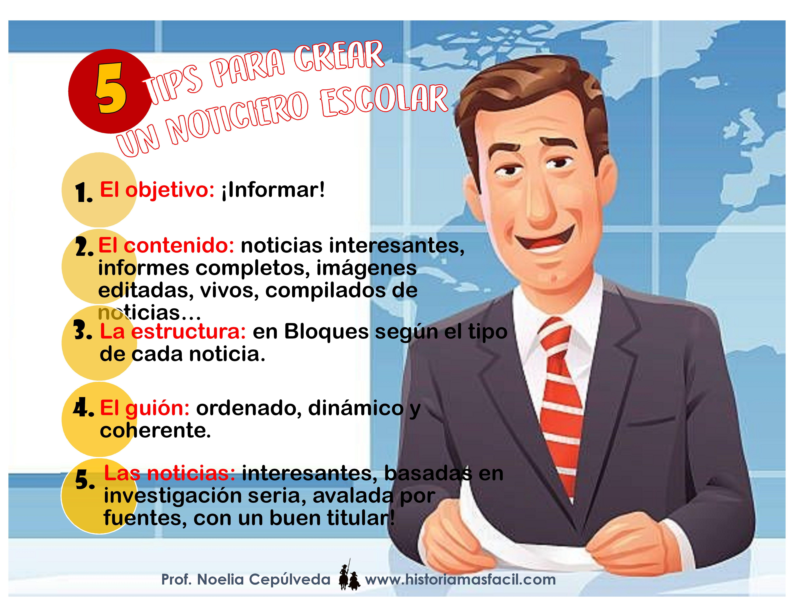

CREATIVIDAD EN LA TOMA DE DECISIONES y METODOS CUANTITATIVOS UTILIZADOS EN LA PROGRAMACION PARA LA TOMA DE DECISIONES
Objetivo
El objetivo de esta unidad es que el alumno desarrolle y aplique técnicas creativas en la toma de decisiones, promoviendo la generación de alternativas innovadoras y efectivas para resolver problemas y contribuir al éxito de las organizaciones. A través de este enfoque, se espera que el alumno sea capaz de enfrentar desafíos con una perspectiva amplia y creativa, utilizando herramientas y métodos específicos para fomentar la creatividad en cada paso del proceso de toma de decisiones
Introducción
En el contexto organizacional, la toma de decisiones efectiva es crucial para el éxito y la competitividad. Dos enfoques complementarios que enriquecen este proceso son la creatividad y los métodos cuantitativos. Creatividad en la Toma de Decisiones: La creatividad es esencial para la generación de soluciones innovadoras y efectivas. Un enfoque creativo en la toma de decisiones permite a los individuos y equipos explorar nuevas ideas, visualizar soluciones desde diferentes perspectivas y abordar problemas complejos de manera no convencional. Mediante técnicas creativas, se pueden identificar oportunidades ocultas y desarrollar estrategias que diferencian a las organizaciones en un mercado competitivo. Métodos Cuantitativos Utilizados en la Programación para la Toma de Decisiones: Los métodos cuantitativos, por otro lado, proporcionan un marco estructurado y objetivo para analizar y resolver problemas. Herramientas como la programación lineal, la teoría de colas y los modelos de inventarios ayudan a los tomadores de decisiones a optimizar recursos, minimizar costos y maximizar beneficios. Estos métodos permiten una evaluación precisa y sistemática de las alternativas disponibles, facilitando decisiones más informadas y reduciendo la incertidumbre. Integrar la creatividad y los métodos cuantitativos en el proceso de toma de decisiones permite a las organizaciones combinar lo mejor de ambos mundos: la innovación y la precisión. Este enfoque holístico no solo mejora la calidad de las decisiones, sino que también fomenta una cultura organizacional más dinámica y adaptable a los cambios del entorno.
Desarrollo
EN QUE CONSISTE EL PROCESO CREATIV0 Y SUS ETAPAS PARA LA TOMA DE DECISIONES
 El proceso creativo es esencial en la toma de decisiones, especialmente cuando se enfrentan problemas complejos que requieren soluciones innovadoras. Este proceso no es simple ni lineal y generalmente se compone de cuatro fases interrelacionadas:
Exploración inconsciente: Esta fase ocurre fuera de los límites de la conciencia. Las ideas y soluciones emergen de la mente subconsciente.
Intuición: Actúa como un enlace entre el inconsciente y la conciencia, permitiendo que las ideas emergentes se presenten a la mente consciente.
Discernimiento: Es el resultado de un trabajo intenso. Aquí, las ideas son analizadas y refinadas para identificar su viabilidad y efectividad.
Formulación lógica: Mediante la reflexión persistente en una idea y la solicitud de críticas a los demás, se logra una formulación lógica y coherente de las soluciones propuestas .
Estas etapas destacan la importancia de permitir que las ideas fluyan y evolucionen, utilizando tanto el pensamiento intuitivo como el analítico para llegar a decisiones efectivas y creativas.
El proceso creativo es esencial en la toma de decisiones, especialmente cuando se enfrentan problemas complejos que requieren soluciones innovadoras. Este proceso no es simple ni lineal y generalmente se compone de cuatro fases interrelacionadas:
Exploración inconsciente: Esta fase ocurre fuera de los límites de la conciencia. Las ideas y soluciones emergen de la mente subconsciente.
Intuición: Actúa como un enlace entre el inconsciente y la conciencia, permitiendo que las ideas emergentes se presenten a la mente consciente.
Discernimiento: Es el resultado de un trabajo intenso. Aquí, las ideas son analizadas y refinadas para identificar su viabilidad y efectividad.
Formulación lógica: Mediante la reflexión persistente en una idea y la solicitud de críticas a los demás, se logra una formulación lógica y coherente de las soluciones propuestas .
Estas etapas destacan la importancia de permitir que las ideas fluyan y evolucionen, utilizando tanto el pensamiento intuitivo como el analítico para llegar a decisiones efectivas y creativas.
TECNICAS CREATIVAS PARA LA TOMA DE DESICIONES
Tormenta o lluvia de ideas:
 Es una técnica que se puede realizar en grupo o de forma individual. Consiste en anotar todas las ideas relacionadas con un tema específico, sin restricciones. Una vez recopiladas, se seleccionan las ideas más relevantes y se extraen conclusiones para elegir la mejor opción.
Reglas:
No criticar ninguna idea.
Mientras más extremas sean las ideas, mejor.
Fomentar la cantidad de ideas producidas.
Estimular la mejora progresiva de las ideas.
Es una técnica que se puede realizar en grupo o de forma individual. Consiste en anotar todas las ideas relacionadas con un tema específico, sin restricciones. Una vez recopiladas, se seleccionan las ideas más relevantes y se extraen conclusiones para elegir la mejor opción.
Reglas:
No criticar ninguna idea.
Mientras más extremas sean las ideas, mejor.
Fomentar la cantidad de ideas producidas.
Estimular la mejora progresiva de las ideas.
Seguir las noticias para inspirarte:
 Utilizar la información diaria de los medios como fuente de inspiración. Las noticias pueden proporcionar ideas sorprendentes que se pueden adaptar y expandir para desarrollar nuevas soluciones o proyectos.Toma nota de experiencias ajenas:
 Reunirse con amigos o compañeros y escuchar sus historias y experiencias. Las anécdotas de otras personas pueden servir como base para crear nuevas ideas y soluciones innovadoras.
Reunirse con amigos o compañeros y escuchar sus historias y experiencias. Las anécdotas de otras personas pueden servir como base para crear nuevas ideas y soluciones innovadoras.
Haz una lista de preguntas:
 Empezar con preguntas básicas y luego avanzar hacia preguntas más específicas. Esto ayuda a generar más argumentos y nueva información, lo cual puede llevar a mejores ideas y soluciones.
Empezar con preguntas básicas y luego avanzar hacia preguntas más específicas. Esto ayuda a generar más argumentos y nueva información, lo cual puede llevar a mejores ideas y soluciones.
Método 635:
 Es un método grupal donde seis personas aportan tres ideas cada una en un lapso de cinco minutos. Este proceso se repite seis veces. Al final, se escogen las ideas más útiles y se extraen conclusiones de ellas.
Es un método grupal donde seis personas aportan tres ideas cada una en un lapso de cinco minutos. Este proceso se repite seis veces. Al final, se escogen las ideas más útiles y se extraen conclusiones de ellas.
Hacer dibujos o bocetos:
 Utilizar dibujos para expresar ideas que no se pueden comunicar fácilmente con palabras. Esta técnica es útil para dar forma a conceptos y puede aplicarse en el diseño de logotipos, sitios web, y otros proyectos creativos.
Utilizar dibujos para expresar ideas que no se pueden comunicar fácilmente con palabras. Esta técnica es útil para dar forma a conceptos y puede aplicarse en el diseño de logotipos, sitios web, y otros proyectos creativos.

METODOS CUANTITATIVOS UTILIZADOS EN LA PROGRAMACION PARA LA TOMA DE DECISIONES
Los métodos cuantitativos utilizados en la programación para la toma de decisiones son técnicas matemáticas y estadísticas que ayudan a analizar datos y a tomar decisiones informadas. Aquí hay algunos de los métodos más comunes:Análisis de regresión:
Regresión Lineal: Utilizada para modelar la relación entre una variable dependiente y una o más variables independientes. Regresión Logística: Usada para predecir la probabilidad de un evento binario.Series de tiempo:
Modelos ARIMA: Utilizados para analizar y predecir datos en serie temporal. Suavizamiento Exponencial: Métodos como el Holt-Winters para hacer pronósticos basados en datos históricos.
Suavizamiento Exponencial: Métodos como el Holt-Winters para hacer pronósticos basados en datos históricos.
 Árboles de Decisión: Para mapear decisiones y sus posibles consecuencias, incluyendo riesgos, costos y beneficios.
Árboles de Decisión: Para mapear decisiones y sus posibles consecuencias, incluyendo riesgos, costos y beneficios.
 Diagramas de Influencia: Extensiones de los árboles de decisión que muestran la relación entre decisiones, eventos inciertos y resultados.
Diagramas de Influencia: Extensiones de los árboles de decisión que muestran la relación entre decisiones, eventos inciertos y resultados.
Apoyo didactico
Aqui se muestran algunos recursos de apoyo para el fortalecimiento del aprendizaje
Conclusión
La toma de decisiones eficaz en la programación y en diversas áreas de negocio requiere una combinación equilibrada de métodos cuantitativos y creatividad. Los métodos cuantitativos, como el análisis de regresión, las series de tiempo, la optimización, la simulación, la teoría de colas, el análisis de decisión, los modelos de inventarios, la teoría de juegos, las redes neuronales y el machine learning, y el análisis multicriterio, ofrecen un enfoque riguroso y basado en datos para resolver problemas complejos y tomar decisiones informadas. Estas herramientas permiten analizar grandes cantidades de datos, identificar patrones, predecir resultados y optimizar recursos de manera efectiva. Sin embargo, la creatividad es igualmente crucial en la toma de decisiones. La creatividad permite a los tomadores de decisiones pensar fuera de los límites convencionales, explorar nuevas posibilidades y encontrar soluciones innovadoras a problemas únicos. La creatividad fomenta la generación de ideas originales y la capacidad de adaptarse a situaciones cambiantes, algo que los métodos cuantitativos por sí solos no pueden lograr. Integrar la creatividad con los métodos cuantitativos permite a las organizaciones y profesionales abordar problemas desde múltiples perspectivas. Mientras que los métodos cuantitativos proporcionan una base sólida y analítica, la creatividad introduce flexibilidad y originalidad en el proceso de toma de decisiones. Esta combinación sinérgica facilita la identificación de soluciones más completas y efectivas, mejorando tanto la eficiencia como la innovación. En conclusión, la convergencia de métodos cuantitativos y creatividad en la toma de decisiones proporciona una ventaja competitiva significativa. Al aprovechar la precisión y el rigor de los métodos cuantitativos junto con la inspiración y la flexibilidad de la creatividad, los tomadores de decisiones pueden desarrollar estrategias más robustas y adaptativas, capaces de enfrentar los desafíos complejos y dinámicos del mundo actual.
Actividad Practica
Preguntas de reflexion
Actividad Evaluativa
Ahora pondremos a prueba tus conocimientos
Presiona aqui para realizar la prueba